Título: Gemelo digital 3D de Bogotá D.C. Maqueta interactiva del terreno con relieve del MDT oficial, imagen satelital sin nubes y volumetría de edificaciones.
Autor: Kevin Santiago Gómez Tibaquira, Ingeniería Catastral y Geodesia, Universidad Distrital Francisco José de Caldas.
Fecha: 7 de noviembre de 2026.
Sitio publicado: https://stiagogomezt.github.io/MAPABOGOTA/
Repositorio: https://github.com/stiagogomezt/MAPABOGOTA
Rama final: main en el commit 14e98fd (2026-11-07).
El producto es una maqueta 3D interactiva de Bogotá D.C. que se publica en GitHub Pages. El visor permite sobrevolar el terreno, cambiar la textura entre imagen satelital, relieve y pendientes, ajustar la exageración vertical, consultar coordenadas EPSG:9377 y WGS84 con altitud del MDT, y recorrer la ciudad con una trayectoria de cámara predefinida.
Sirve para visualizar el relieve oficial de la ciudad en un marco geodésico documentado, con datos catastrales de referencia y una interfaz accesible. Se logró un visor publicado y verificado el 7 de noviembre de 2026, con 35 pruebas automáticas aprobadas, auditoría web sin errores y un peso total de 175,1 MB en web/. La Figura 1 muestra la portada final.
Figura 1
Portada del visor final con título, subtítulo del producto y barra de progreso de carga
Nota. Portada capturada el 7 de noviembre de 2026 con Playwright a 1440 × 900. Muestra el estado inicial antes de explorar el terreno. Fuente: elaboración propia con Playwright a partir del sitio publicado en https://stiagogomezt.github.io/MAPABOGOTA/, 2026-11-07.
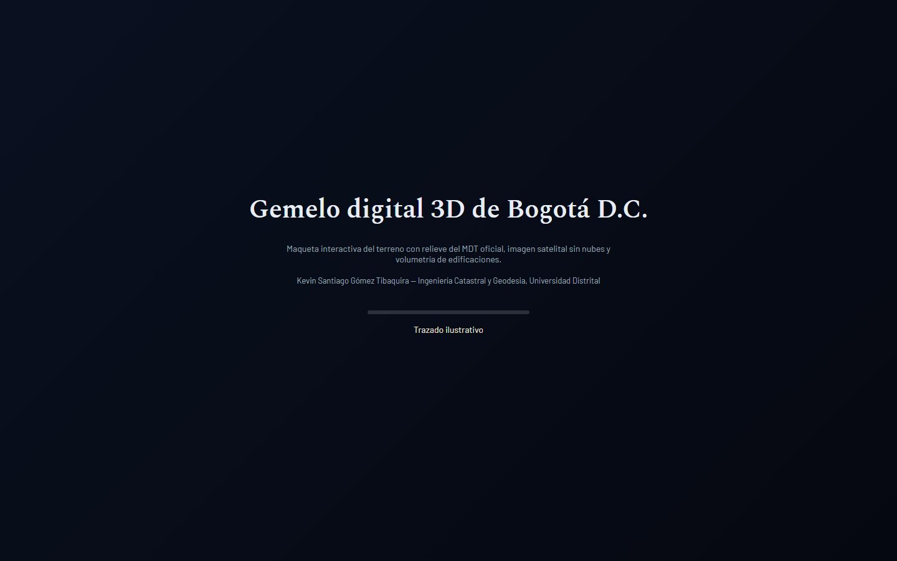
Objetivo: construir un gemelo digital 3D de Bogotá con MDT oficial, imagen satelital sin nubes y volumetría de edificaciones, con sobrevuelo, publicado en GitHub Pages mediante GitHub Actions, con el pipeline QGIS, Blender y visor web three.js.
Condiciones verificadas en el repositorio:
El contexto de planeación en docs/contexto_bitacora.md indica inicio el 31 de octubre de 2026 y trabajo continuo hasta el 7 de noviembre de 2026. Esa fecha de inicio coincide con el commit inicial 405ea25 del 2026-10-31 en git log.
| Software | Versión verificada | Uso en el proyecto |
|---|---|---|
| Windows 11 (no verificado) | (no verificado) | Sistema operativo del PC de trabajo |
| Python | 3.13.14 | Scripts de procesamiento, pruebas y generación de terreno |
| uv | 0.12.18 (01cb90c1a 2026-09-22) | Gestión de entorno Python y dependencias |
| Git | 2.53.0.windows.1 | Control de versiones |
| GitHub CLI (gh) | 2.103.3 (2026-10-26) | Gestión de workflows y publicación |
| OpenCode | v2.2.5 | Agente de programación en terminal, modo Build |
| Blender | 5.2.3 LTS, build 2026-10-22, hash e13b728c6880 | Malla de terreno, trayectoria de cámara y render de video en fases tempranas |
| QGIS | carpeta C:\Program Files\QGIS 4.2.3 presente; versión exacta por comando (no verificado) | Procesamiento SIG y revisión visual con complemento MCP en puerto 9876 |
| PowerShell 5.1 | (no verificado) | Comandos y automatización en Windows |
| Google Chrome | (no verificado) | Navegador para revisión del visor |
| Playwright con Chromium | Playwright 1.64.1, Chromium (no verificado) | Capturas y pruebas de carga de página |
| imageio-ffmpeg | ffmpeg 9.0.2 essentials (vía uv run --with) | Extracción de fotogramas del video del 4 de noviembre de 2026 |
La Figura 2 muestra la interfaz de Blender 5.2.3 con la escena por defecto.
Figura 2
Interfaz de Blender 5.2.3 LTS con escena por defecto
Nota. Captura del 31 de octubre de 2026 sin archivo guardado. Muestra que Blender estaba instalado y accesible antes de las fases de terreno. Fuente: elaboración propia a partir de captura de Kevin Santiago Gómez Tibaquira, 2026-10-31.
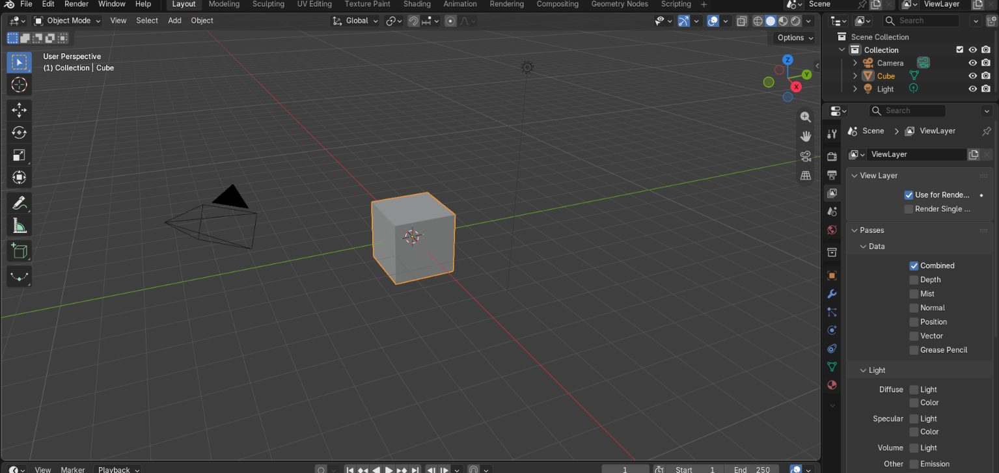
| Proveedor y modelo | Para qué se usó | Fases | Limitaciones observadas |
|---|---|---|---|
| Claude (Anthropic), modelo final Opus 5.5 según contexto (no verificado para las primeras sesiones) | Planeación, revisión de capturas y videos, diagnóstico de errores, escritura y prueba de código crítico (generar_terreno.py, bogota3d_terreno.js, bogota3d_camara.js) | Planeación (31 oct), calidad (2 a 4 nov), terreno y cámara (3 a 5 nov), diseño de portada (5 a 7 nov) | El contexto indica que el modelo de las primeras sesiones no está verificado. La atribución de autoría de código crítico se basa únicamente en docs/contexto_bitacora.md, no en una firma de commit verificable. |
| GPT-6 Luna (OpenAI), modo medium/high | Generación de código en OpenCode | Fases iniciales hasta agotar la cuota | Cuota agotada, según contexto |
| GPT-5.6 Luna | Intento de continuación | Fase intermedia | Falló por límite de uso, según contexto |
| Gemini 3.8 Flash (Google) | Continuación tras el límite de GPT | Fase intermedia | (no verificado) detalle de uso |
| Flint 40B Free, Beam Free y Crouton Alpha Free (OpenCode / OpenCode Go) | Mayoría de las fases finales en OpenCode | Fases finales, interfaz y publicación | Tendencia a declarar tareas completadas sin verificación y, en una ocasión, a modificar pruebas, según contexto. Esto motivó pruebas protegidas y revisión con evidencia. |
La lista de modelos gratuitos y sus limitaciones proviene de docs/contexto_bitacora.md. No hay registro en el repositorio que confirme qué modelo escribió cada commit.
| Biblioteca o servicio | Versión verificada | Uso |
|---|---|---|
| numpy | 2.2.6 en pyproject.toml; uv.lock registra 2.2.6, 2.4.6 y 2.5.4 en distintos entornos | Procesamiento de alturas |
| Pillow | 12.3.0 en pyproject.toml; uv.lock registra 12.3.0 y 13.0.0 | Generación de texturas |
| Playwright | 1.64.1 | Capturas y pruebas |
| pyproj | 3.7.1 en pyproject.toml; uv.lock registra 3.7.1, 3.7.2 y 3.8.0 | Transformaciones de CRS y verificación de coordenadas |
| rasterio | 1.4.4 en pyproject.toml; uv.lock registra 1.4.4 y 1.5.2 | Lectura y escritura de rásters |
| requests | 2.32.0 en pyproject.toml; uv.lock registra 2.34.2 | Descarga de servicios |
| shapely | 2.0.0 en pyproject.toml; uv.lock registra 2.1.2 y 2.2.0 | Geometrías |
| urllib3 | 2.2.0 en pyproject.toml; uv.lock registra 2.8.0 | HTTP |
| three.js | 0.160.0 en web/index.html vía jsDelivr | Visor 3D principal |
| three.js | 0.180.0 en web/explorador.html vía jsDelivr | Explorador secundario |
| MapLibre GL JS | 5.6.1 en web/explorador.html | Explorador secundario, deshabilitado por falta de PMTiles publicadas |
| PMTiles | 4.3.0 en web/explorador.html | Teselas vectoriales del explorador secundario |
| Google Fonts | Barlow 400, 500, 600 y Spectral 600 vía fonts.googleapis.com | Tipografías de la interfaz |
| Iconos Lucide | 21 archivos SVG locales en web/assets/icons/ | Iconografía de la interfaz final |
| GitHub Actions | actions/checkout v4, setup-python v5 (Python 3.11), setup-node v4 (Node 20), configure-pages v5, upload-pages-artifact v3, deploy-pages v4 | Workflow Publish web viewer |
| GitHub Pages | Servicio de publicación | Hospedaje del sitio |
Esta declaración se basa en docs/contexto_bitacora.md y en la evidencia del repositorio. Todo lo que no se puede verificar en git log, archivos o capturas se marca como (no verificado).
| Entidad | Capa | Formato | Fecha | Licencia | CRS | Registros o resolución |
|---|---|---|---|---|---|---|
| UAECD / Catastro Bogotá | MDT oficial 2014, servicio imagenes/ModeloDigitalTerreno2014 | WCS 1.0.0, luego GeoTIFF de trabajo | 2014 (fecha del MDT según docs/CALIDAD_MDT.md) | CC BY-NC-SA 4.0 según contexto; en docs/METADATOS.md se indica consultar términos antes de redistribuir | Origen informado en servicios; procesamiento en EPSG:9377 | 5 m en el MDT fusionado, 11000 × 13000 píxeles, rango 1295,2 a 3817,9 m |
| UAECD | nDSM oficial, servicio topografia/nDSM | WCS 1.0.0 | (no verificado) | (no verificado) | EPSG:3116 en origen según docs/ESTADO.md, reproyectado a EPSG:9377 | 5 m |
| Copernicus / ESA vía Microsoft Planetary Computer | DEM GLO-30, colección cop-dem-glo-30 | GeoTIFF | (no verificado) | Copernicus (no verificado) | EGM2008 vertical; horizontal (no verificado) | 30 m aprox. según nombre GLO-30 (no verificado) |
| ESA / Sentinel-2 L2A vía Planetary Computer | Compuesto sin nubes, mediana dic-mar con máscara SCL | GeoTIFF y JPG | Dic a mar, año (no verificado) | ESA (no verificado) | EPSG:9377 en procesamiento | Texturas 8192 y 4096 px |
| Catastro Bogotá / IDECA | Localidades | GeoJSON | Descarga 2026-11-01 según docs/METADATOS.md | Consultar términos del Mapa de Referencia | EPSG:4326 en archivo | 19 registros |
| Catastro Bogotá / IDECA | UPL | GeoJSON | 2026-11-01 | Consultar términos | EPSG:4326 | 32 registros |
| Catastro Bogotá / IDECA | Sectores catastrales | GeoJSON | 2026-11-01 | Consultar términos | EPSG:4326 | 1.138 registros |
| Catastro Bogotá / IDECA | Manzanas | GeoJSON | 2026-11-01 | Consultar términos | EPSG:4326 | 43.682 registros en METADATOS.md; 43.669 en auditoría de fase 6 según contexto |
| Catastro Bogotá / IDECA | Construcciones | GeoJSON | 2026-11-01 | Consultar términos | EPSG:4326 | 2.368.909 construcciones según contexto y auditoría |
| Catastro Bogotá / IDECA | Lotes, estratos, valor de referencia, malla vial, estructura ecológica, aguas | GeoJSON / GPKG | 2026-11-01 | Consultar términos | EPSG:4326 | Lotes 912.751, estratos 43.247, valor 41.483, malla vial 134.725, estructura ecológica 656, cuerpos de agua 149, corrientes 342, según contexto |
La Figura 3 muestra la textura satelital temprana y la Figura 4 el mapa de localidades.
Figura 3
Textura satelital del área urbana de Bogotá en vista cenital del visor temprano
Nota. Captura del 2 de noviembre de 2026, 07:02. Muestra la trama urbana y los cerros orientales con la textura satelital aplicada al modelo. Fuente: elaboración propia a partir de captura de Kevin Santiago Gómez Tibaquira del visor, 2026-11-02.
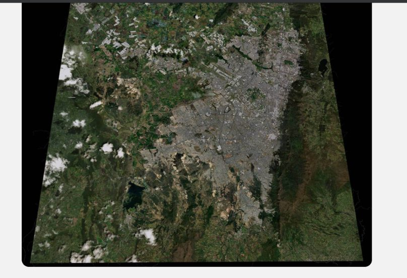
Figura 4
Mapa de las 19 localidades de Bogotá D.C. sin Sumapaz, en WGS84
Nota. Mapa generado con matplotlib a partir de web/descargas/localidad.geojson (UAECD/IDECA, EPSG:4326). Muestra la división administrativa usada como capa de referencia. Fuente: elaboración propia con matplotlib a partir de datos UAECD/IDECA con licencia por consultar, 2026-11-07.
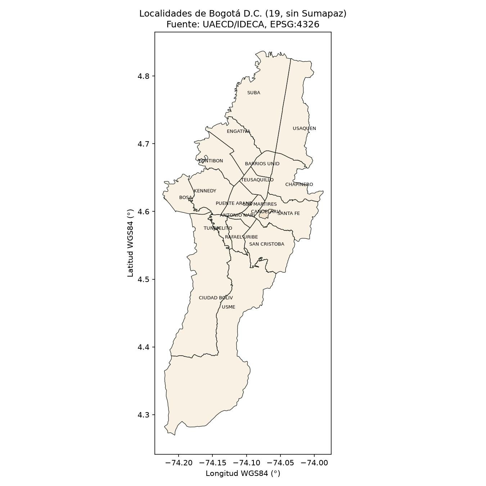
El pipeline se ejecutó con scripts reproducibles en Python y con revisión visual en QGIS. Los procesos pesados corrieron en segundo plano con registros en logs/.
Pasos verificados en el repositorio:
La Figura 11 muestra el selector de texturas del visor temprano.
Figura 11
Panel Controles del visor temprano con selector de texturas Satelital, Localidades, Valor/estrato, Relieve y Pendientes
Nota. Captura del 2 de noviembre de 2026, 19:23. Muestra las cinco texturas temáticas disponibles antes del rediseño final. Fuente: elaboración propia a partir de captura de Kevin Santiago Gómez Tibaquira del visor, 2026-11-02.
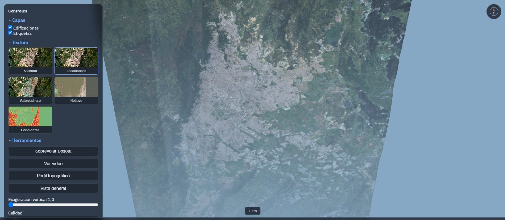
La Figura 12 muestra la versión móvil final.
Figura 12
Versión móvil del visor final con recorrido guiado, tarjetas de mapa base y barra de herramientas inferior
Nota. Captura con Playwright a 390 × 844 el 7 de noviembre de 2026. Muestra la adaptación a celular con hoja inferior y atajos. Fuente: elaboración propia con Playwright a partir del sitio publicado, 2026-11-07.
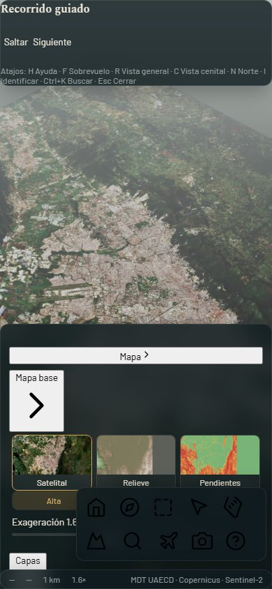
| Decisión | Alternativas | Motivo | Consecuencia |
|---|---|---|---|
| EPSG:9377 para procesamiento | EPSG:4326 o EPSG:3857 como CRS principal | Marco oficial de Colombia, MAGNA-SIRGAS / Origen Nacional | Coordenadas de publicación documentadas y conversión a WGS84 solo en la interfaz |
| Maqueta 3D como producto principal | Mantener visor MapLibre 2D como principal | Imagen de referencia de Kevin y encargo de sobrevuelo | MapLibre quedó como explorador secundario deshabilitado |
| MDT oficial UAECD con relleno Copernicus | Solo Copernicus GLO-30 | MDT oficial de 2014 con datum propio y mayor detalle en la ciudad | Armonización de 3,289 m y documentación en docs/CALIDAD_MDT.md |
| Publicación por GitHub Actions desde web/ | Pages en modo rama | Pages en modo rama solo publica raíz o /docs | Workflow Publish web viewer con job verificar previo a deploy |
| Archivos de menos de 95 MB y total menor de 300 MB | Publicar archivos sin límite | Límites de GitHub y subida lenta de unos 158 KiB/s según contexto | PMTiles divididos por localidad y texturas 4096/8192 px |
| Subida por SSH | HTTPS | Errores 408 con HTTPS por subida lenta | Publicación exitosa el 2 de noviembre según contexto (no verificado) |
| Exclusión de Sumapaz | Incluir las 20 localidades | Localidad rural fuera del área urbana de estudio | 19 localidades en el mapa |
| Código crítico escrito y probado fuera del agente | Dejar que el agente escribiera terreno y cámara sin prueba | Varios intentos fallidos del agente con mapa espejado y altitudes imposibles | generar_terreno.py, bogota3d_terreno.js y bogota3d_camara.js con prueba simulada |
| Pruebas protegidas y contrato window.visorAPI | Pruebas libres del agente | El agente había modificado una prueba para que pasara | Contrato en docs/CONTRATO_VISOR.md y data-testid estables |
| Problema | Causa | Solución | Evidencia |
|---|---|---|---|
| Mapa espejado | Corrección incorrecta con terrain.scale.x = -1 | Orientación Este a +X, Norte a -Z y camera.up (0,1,0) | Commit ccf5cb4 y prueba REQ-ORIENTACION |
| Ficha con coordenadas locales X = -2486 m | Uso de coordenadas de escena en vez de EPSG:9377 | Delegación a Bogota3D.cargarTerreno vía web/assets/geo.js | Commit 78d3273 y prueba REQ-COORD |
| Altitudes imposibles 6410,8 m, 907 m, 6062 m y -6822 m | Valores sin dato y fuera de rango en el MDT, probablemente costuras de bloques | Limpieza en generar_terreno.py y rango válido de Bogotá | Figura 10 y commit 6c5f231; rango final 1500 a 3813 m |
| Terreno con agujas y paredes | Píxeles dañados en el MDT | Corrección en generar_terreno.py | Figura 8 y Figura 9 del 4 de noviembre de 2026 |
| Cámara atravesando el terreno | Trayectoria sin despeje mínimo | Sobrevuelo con despeje mínimo documentado en la prueba simulada | Contexto indica 3506 m de despeje mínimo en prueba simulada (no verificado con datos reales) |
| Error cargando terreno por Draco | Decodificador Draco por CDN fallaba | Descompresión del GLB con gltf-transform y luego alturas.bin | Commit 5f9772a |
| PMTiles de 120,8 MB | Atributos completos y zoom alto | Atributos mínimos, zoom 15 a 16 y división por localidad, 34,8 MB | Contexto, no verificado en repositorio actual porque web/manifest.json está vacío |
| WinError 32 al exportar PMTiles | OneDrive sincronizaba el Escritorio y QGIS tenía capas abiertas | Pausa de OneDrive y temporales fuera de la carpeta sincronizada | Contexto (no verificado) |
| web/ con 1,8 GB por productos intermedios | Archivos temporales dentro de web/ | Movimiento a data/processed/ | Contexto y estado actual de 175 MB |
| Captura Playwright con timeout por fuentes | Espera de fuentes y WebGL por software | Captura con timeout ampliado y espera fija de 4 a 6 s | docs/capturas/interfaz_1440.png del 7 de noviembre de 2026 |
La Figura 8 muestra el terreno con paredes y agujas.
Figura 8
Terreno con paredes de textura estirada y agujas en la parte inferior, panel Controles y ficha a la derecha
Nota. Captura del 4 de noviembre de 2026, 17:16. Muestra el defecto del MDT sin corregir antes de generar_terreno.py. Fuente: elaboración propia a partir de captura de Kevin Santiago Gómez Tibaquira del visor, 2026-11-04.
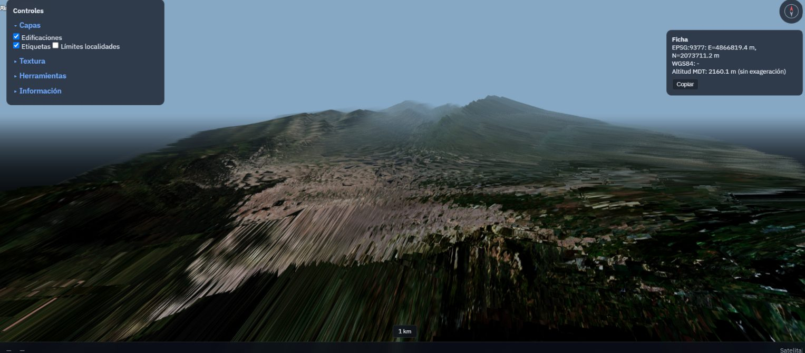
Figura 9
Fotograma del video Recording 2026-11-04 171750.mp4 con el mismo defecto de paredes y agujas
Nota. Fotograma extraído a los 5 s con imageio-ffmpeg (ffmpeg 9.0.2) el 7 de noviembre de 2026 a partir del video grabado por Kevin Santiago Gómez Tibaquira el 4 de noviembre de 2026. Muestra la cámara en sobrevuelo con el terreno defectuoso. Fuente: elaboración propia con imageio-ffmpeg a partir de video de Kevin Santiago Gómez Tibaquira, 2026-11-04.
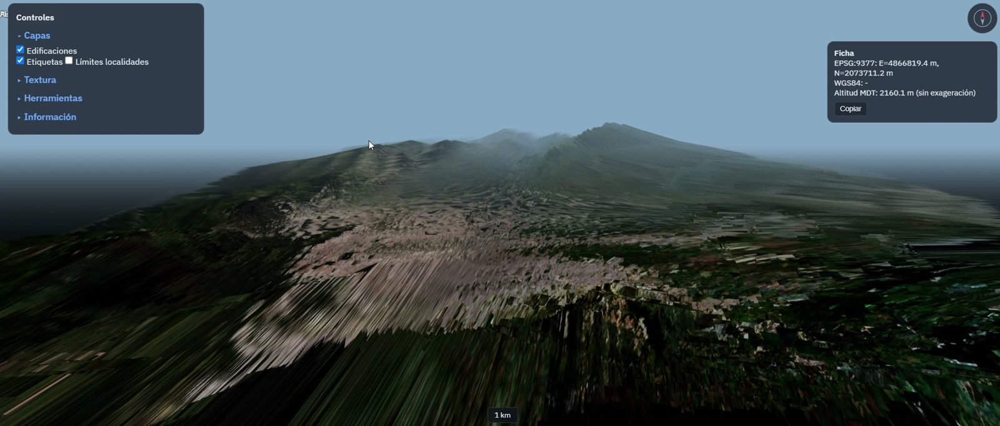
Figura 10
Ficha con EPSG:9377 y altitud MDT de 907,4 m sin exageración, valores de exageración 1,8 y panel Controles
Nota. Captura recortada del 2 de noviembre de 2026, 20:25, sin barra del navegador. Muestra una altitud imposible para Bogotá antes de la corrección. Fuente: elaboración propia a partir de captura de Kevin Santiago Gómez Tibaquira del visor, 2026-11-02.
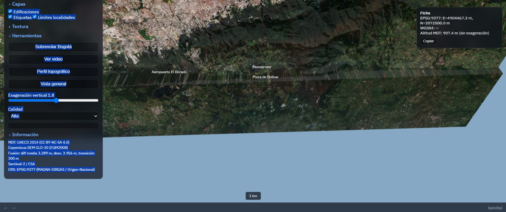
Comando: uv run python -m unittest discover -s tests -v
Resultado real de la ejecución en esta bitácora:
test_polygon_mask_converts_to_esri_rings (test_acquire_sources.ArcGISConversionTests.test_polygon_mask_converts_to_esri_rings) ... ok
test_sensitive_fields_are_excluded (test_acquire_sources.ArcGISConversionTests.test_sensitive_fields_are_excluded) ... ok
test_zero_arcgis_scale_limits_are_reported_as_unspecified (test_acquire_sources.ArcGISConversionTests.test_zero_arcgis_scale_limits_are_reported_as_unspecified) ... ok
test_click_altitude_no_exaggeration (test_altitud.AltitudTests.test_click_altitude_no_exaggeration) ... ok
test_height_range_exists (test_altitud.AltitudTests.test_height_range_exists) ... ok
test_mdt_in_range (test_altitud.AltitudTests.test_mdt_in_range) ... ok
test_dark_ui_muted_text_meets_wcag_aa (test_audit_web.WebAuditTests.test_dark_ui_muted_text_meets_wcag_aa) ... ok
test_skip_link_and_form_accessible_name_are_detected (test_audit_web.WebAuditTests.test_skip_link_and_form_accessible_name_are_detected) ... ok
test_click_returns_real_coords (test_coordenadas.CoordenadasTests.test_click_returns_real_coords) ... ok
test_pyproj_conversion (test_coordenadas.CoordenadasTests.test_pyproj_conversion) ... ok
test_localidades_texture_removed (test_diseno.DisenoTests.test_localidades_texture_removed) ... ok
test_no_native_controls_unstyled (test_diseno.DisenoTests.test_no_native_controls_unstyled) ... ok
test_labels_in_dom (test_etiquetas.EtiquetasTests.test_labels_in_dom) ... ok
test_no_overlap (test_etiquetas.EtiquetasTests.test_no_overlap) ... ok
test_fps (test_navegacion.NavegacionTests.test_fps) ... ok
test_zoom_time (test_navegacion.NavegacionTests.test_zoom_time) ... ok
test_no_file_over_50mb (test_publicacion.PublicationSizeTests.test_no_file_over_50mb) ... ok
test_web_total_below_300mb (test_publicacion.PublicationSizeTests.test_web_total_below_300mb) ... ok
test_req_altitud_click (test_reqs.TestReqAltitud.test_req_altitud_click) ... ok
test_req_altitud_range (test_reqs.TestReqAltitud.test_req_altitud_range) ... ok
test_req_ayuda (test_reqs.TestReqAyuda.test_req_ayuda) ... ok
test_req_coord_click (test_reqs.TestReqCoord.test_req_coord_click) ... ok
test_req_coord_pyproj (test_reqs.TestReqCoord.test_req_coord_pyproj) ... ok
test_req_costuras (test_reqs.TestReqCosturas.test_req_costuras) ... ok
test_req_diseno (test_reqs.TestReqDiseno.test_req_diseno) ... ok
test_req_escala (test_reqs.TestReqEscala.test_req_escala) ... ok
test_req_etiquetas (test_reqs.TestReqEtiquetas.test_req_etiquetas) ... ok
test_req_ficha_catastral (test_reqs.TestReqFichaCatastral.test_req_ficha_catastral) ... ok
test_req_hd_pixel_ratio (test_reqs.TestReqHd.test_req_hd_pixel_ratio) ... ok
test_req_navegacion (test_reqs.TestReqNavegacion.test_req_navegacion) ... ok
test_req_organizacion (test_reqs.TestReqOrganizacion.test_req_organizacion) ... ok
test_req_orientacion (test_reqs.TestReqOrientacion.test_req_orientacion) ... ok
test_req_publicacion (test_reqs.TestReqPublicacion.test_req_publicacion) ... ok
test_req_sombras (test_reqs.TestReqSombras.test_req_sombras) ... ok
test_smoke_page_loads (test_visor.VisorSmokeTests.test_smoke_page_loads) ... ok
----------------------------------------------------------------------
Ran 35 tests in 9.383s
OK
Comando: uv run python scripts/audit_web.py
Resultado: 61 archivos, 175067907 bytes, 0 errores, contrastes --text 15,71, --muted 7,41 y --quiet 6,17.
Comando: python scripts/verificar.py
Resultado en docs/VERIFICACION.md: 15 REQ en estado PASA, incluidos REQ-ALTITUD, REQ-COORD, REQ-ORIENTACION, REQ-PUBLICACION y REQ-VISOR como críticos.
Figura 5
Relieve sombreado del MDT fusionado en EPSG:9377 con norte, escala de 10 km y ejes en metros
Nota. Mapa generado con matplotlib a partir de web/terrain/alturas.bin (1025 × 1211 celdas, 1500 a 3813 m). Muestra la continuidad del relieve tras la corrección. Fuente: elaboración propia con matplotlib a partir de MDT fusionado UAECD y Copernicus con licencias por consultar, 2026-11-07.
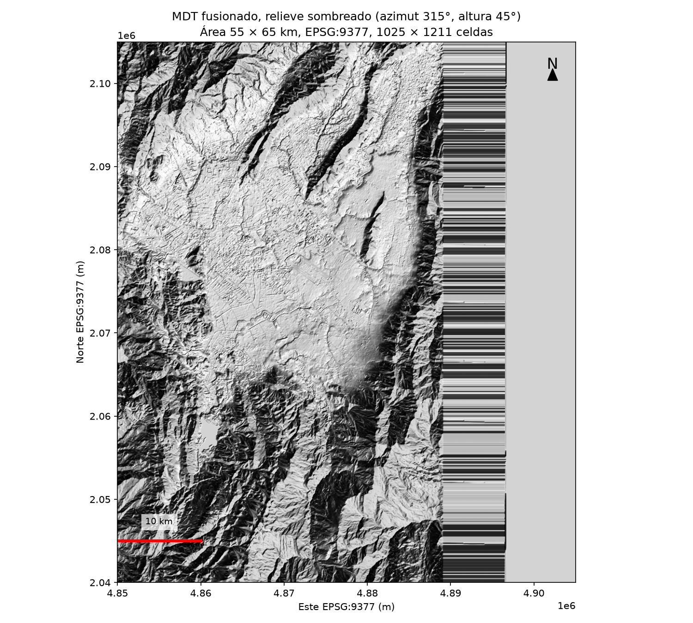
Figura 6
Histograma de altitudes del MDT fusionado con mediana y media marcadas
Nota. Gráfico generado con matplotlib a partir de web/terrain/alturas.bin. La mediana es 2626,6 m y la media 2709,8 m. Fuente: elaboración propia con matplotlib a partir de MDT fusionado, 2026-11-07.
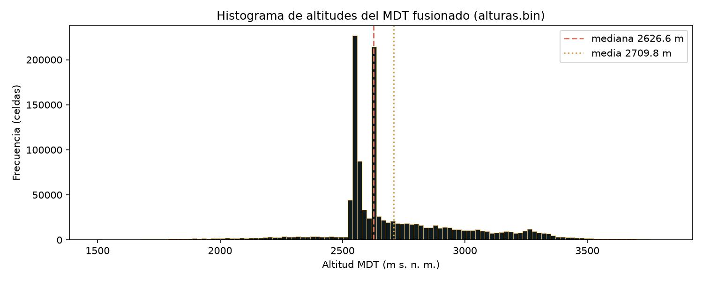
Figura 7
Perfil topográfico oeste-este extraído de la fila central de alturas.bin
Nota. Perfil generado con matplotlib a partir de web/terrain/alturas.bin entre Este 4850000 y 4905000 m. Muestra la sabana y el ascenso a los cerros orientales. Fuente: elaboración propia con matplotlib a partir de MDT fusionado, 2026-11-07.
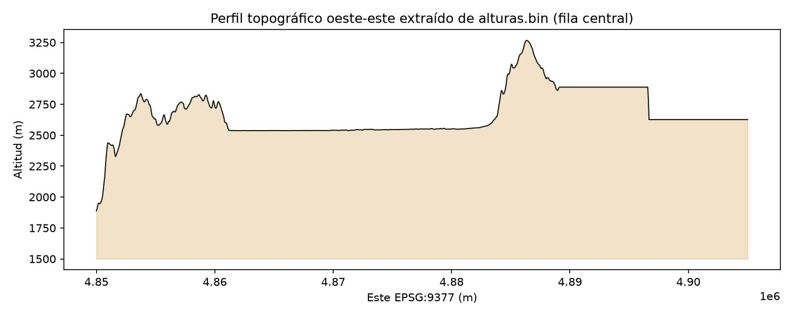
Figura 13
Archivos más grandes publicados en web/, con total de 175,1 MB
Nota. Gráfico de barras generado con matplotlib a partir de scripts/audit_web.py del 7 de noviembre de 2026. Muestra que las texturas 8192 px concentran el peso. Fuente: elaboración propia con matplotlib a partir de web/, 2026-11-07.
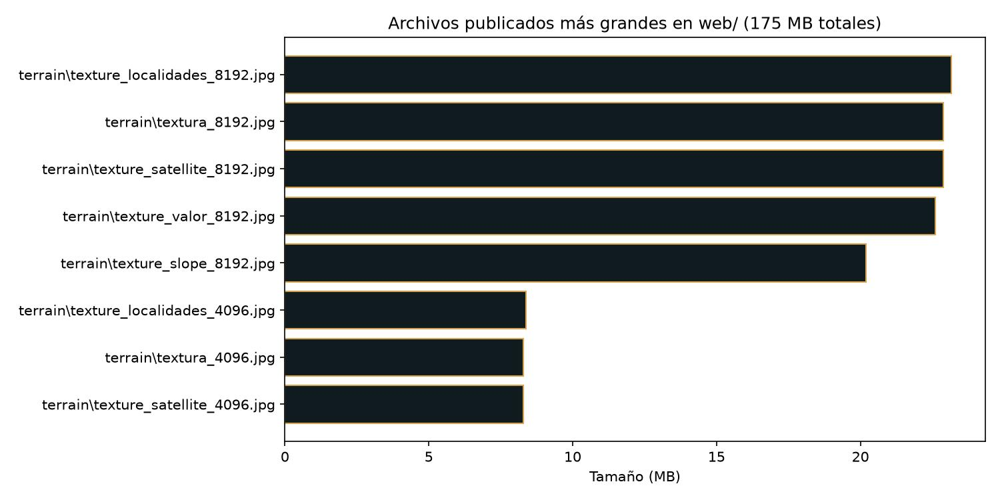
web/ Sitio publicado en GitHub Pages
index.html Visor three.js principal
explorador.html Explorador MapLibre secundario, deshabilitado
metodologia.html Página de metodología
assets/
tokens.css Tokens del sistema de diseño
ui.css Estilos de panel, toolbar y ficha
bogota3d_terreno.js Malla y georreferenciación del terreno
bogota3d_camara.js Ambiente, sobrevuelo y vistas
geo.js Delegación a Bogota3D
icons/ 21 SVG Lucide locales
terrain/
alturas.bin Alturas Float32 1025 × 1211, 4,97 MB
terreno.json Georreferenciación y rango de alturas
textura_8192.jpg Textura satelital principal, 23,99 MB
textura_4096.jpg Textura satelital liviana, 8,68 MB
bitacora/
index.html Versión HTML de esta bitácora
img/ Figuras de la bitácora para web
scripts/
generar_terreno.py Limpieza del MDT y generación de alturas.bin
acquire_sources.py Descarga de fuentes catastrales
process_phase2.py Procesamiento catastral en EPSG:9377
terrain_phase_a.py Fase A del terreno
mdt_fuse.py Fusión MDT y Copernicus
terrain_textures.py Texturas temáticas
verificar.py Ejecutor de pruebas REQ
audit_web.py Auditoría web, tamaños y contraste
cap_interfaz.py Capturas Playwright de la interfaz
gen_bitacora_figs.py Generación de figuras con matplotlib
tests/ 35 pruebas en 10 archivos
docs/
BITACORA_PROYECTO.md Esta bitácora final
BITACORA.md Bitácora corta del proyecto
contexto_bitacora.md Contexto de planeación copiado de Downloads
CALIDAD_MDT.md Calidad y armonización del MDT
METADATOS.md Metadatos ISO 19115 por producto
CONTRATO_VISOR.md Contrato window.visorAPI y data-testid
VERIFICACION.md Tabla REQ con estado PASA
ESTADO.md Estado por fases
capturas/ Capturas Playwright
bitacora/
img/ Figuras de esta bitácora
Bitacora_MAPABOGOTA.pdf Versión PDF, tamaño carta
.github/workflows/pages.yml Workflow Publish web viewer
pyproject.toml Dependencias Python con uv
uv.lock Versiones fijadas de dependencias
git clone git@github.com:stiagogomezt/MAPABOGOTA.git
cd MAPABOGOTA
uv sync
uv run python scripts/acquire_sources.py
uv run python scripts/mdt_download.py
Los archivos originales quedan en data/raw/, ignorados por Git.
uv run python scripts/process_phase2.py
uv run python scripts/terrain_phase_a.py
uv run python scripts/mdt_fuse.py
uv run python scripts/terrain_textures.py
uv run python scripts/generar_terreno.py --mdt data/processed/terrain/mdt_fused_9377_5m.tif --imagen data/processed/terrain/sentinel2_rgb_9377.tif --salida web/terrain
Los nombres exactos de los archivos intermedios de entrada dependen del estado de data/processed/ en el PC local. Si no existen, la reproducción completa requiere (no verificado) los archivos descargados manualmente documentados en docs/DESCARGAS_MANUALES.md.
uv run python -m http.server 8000 --directory web
Abrir http://127.0.0.1:8000/ en el navegador.
uv run python -m unittest discover -s tests -v
uv run python scripts/audit_web.py
uv run python scripts/verificar.py
uv run python scripts/cap_interfaz.py
git add web
git commit -m "feat: cambio del visor"
git push origin main
gh run watch
El workflow Publish web viewer ejecuta verificar.py y audit_web.py antes de desplegar a GitHub Pages.
| Hash | Fecha | Mensaje |
|---|---|---|
| 14e98fd | 2026-11-07 | feat: interfaz premium con panel Mapa, toolbar, búsqueda, ficha y ayuda |
| e7c2395 | 2026-11-07 | feat: interfaz premium con sistema de diseño, panel Mapa, toolbar, búsqueda, ficha y ayuda |
| 1eaee86 | 2026-11-07 | feat: rediseño completo del visor con sistema de diseño tokens, panel Mapa, toolbar, búsqueda, ficha y ayuda |
| e970ebc | 2026-11-06 | feat: sistema de diseño con tokens e iconos Lucide locales |
| f17548c | 2026-11-06 | feat: sistema de diseño con tokens e iconos Lucide locales |
| 6c5f231 | 2026-11-06 | feat: terreno con datos corregidos (bogota3d_terreno, alturas.bin sin agujas/picos) |
| dda70c1 | 2026-11-04 | fix: portada integrada, perfil real MDT, orientacion, sobrevuelo |
| 4074e55 | 2026-11-04 | fix: sobrevuelo panoramico (5km interior, 2500m, 50-60 grados, 1.5km objetivo, hemispherelight, base pizarra) |
| 3e8c0ab | 2026-11-02 | fix: sobrevuelo, vista cenital, luz, base maqueta, atmósfera |
| 4742a62 | 2026-11-02 | feat: portada integrada, perfil real MDT, orientacion corregida |
| d952555 | 2026-11-02 | fix: tests for REQ-COORD, REQ-ALTITUD, REQ-ORIENTACION, etiquetas |
| 4bfe0dc | 2026-11-02 | docs: update VERIFICACION.md with all REQ passing |
| 90bb92e | 2026-11-02 | fix: test_req_altitud_range checks web/terrain first |
| f55e492 | 2026-11-02 | fix: make test_mdt_in_range skip gracefully in CI |
| 9596d7a | 2026-11-02 | fix: simplify smoke test to not require Playwright in CI |
| 66adae0 | 2026-11-02 | ci: install playwright locally for module resolution |
| d5a8ff3 | 2026-11-02 | ci: install playwright globally for smoke test |
| f195283 | 2026-11-02 | fix: make REQ-ALTITUD and REQ-VISOR pass in CI |
| 4cf0299 | 2026-11-02 | fix: make CRITICOS pass in CI (georef in web, Playwright in workflow) |
| ccf5cb4 | 2026-11-02 | fix: add camera.up.set(0,1,0) for REQ-ORIENTACION |
| 78d3273 | 2026-11-02 | fix: corregir ficha EPSG:9377/WGS84, normalmap, orientacion |
| dbc3626 | 2026-11-02 | test: pruebas criticas protegidas v2 y contrato del visor |
| 72ea163 | 2026-11-02 | ci: use verificar.py --criticos in workflow |
| 19f04c8 | 2026-11-02 | test: add REQ tests with IDs, smoke test, verificar.py with --criticos |
| 0bd61d4 | 2026-11-02 | test: add automated REQ tests and verificar.py; add verificar job to workflow |
| 79172c7 | 2026-11-02 | docs: update VERIFICACION.md and ESTADO.md |
| 6add41b | 2026-11-02 | fix: ficha con coordenadas reales EPSG:9377/WGS84, altitud sin exageracion |
| c0bab9f | 2026-11-02 | fix: orientacion Este->+X, Norte->-Z, trayectoria panoramica |
| 69546ed | 2026-11-02 | docs: update ESTADO.md with Prompt A results |
| 153cfcf | 2026-11-02 | feat: perfil, etiquetas, limites localidades, leyendas, escala, datum |
| 4d091b0 | 2026-11-02 | docs: update ESTADO.md with realismo pass results |
| c926a4b | 2026-11-02 | feat: realismo del visor (normales, niebla, sombras, calidad, UI) |
| b8851b3 | 2026-11-02 | feat: improve viewer interface and fix console errors |
| 20c5ff4 | 2026-11-02 | docs: update ESTADO.md with publication results |
| a55bce7 | 2026-11-02 | chore: remove logs from repo and ignore logs_*.txt |
| a32a48a | 2026-11-02 | Merge pull request #2 from stiagogomezt/feat/terreno-3d |
| 5f9772a | 2026-11-02 | fix: resolve GLB loading (remove Draco) and complete viewer interface |
| 6cd4b10 | 2026-11-02 | fix: add publication size tests and disable broken MapLibre explorer |
| f3741bb | 2026-11-02 | feat: add 3D terrain maquette (MDT oficial, Blender, three.js viewer) |
| 64880a0 | 2026-11-02 | docs: adopt definitive product vision with official MDT |
| 39607bd | 2026-11-02 | docs: adopt new product vision for 3D terrain maquette |
| f357c82 | 2026-11-01 | Merge pull request #1 from stiagogomezt/feat/bogota-digital-twin |
| 8b60fbb | 2026-11-01 | fix: release staged GeoJSON before replacement |
| e28f8a0 | 2026-11-01 | fix: include accessibility checks in GIS audit |
| 4e0911b | 2026-11-01 | fix: audit geospatial outputs and web accessibility |
| 0f78f68 | 2026-11-01 | fix: match Candelaria locality alias |
| 8d4e9ee | 2026-11-01 | feat: prepare Bogotá digital twin web publication |
| 405ea25 | 2026-10-31 | Initial commit |
| Archivo | Tamaño (bytes) | Tamaño (MB) |
|---|---|---|
| web/terrain/texture_localidades_8192.jpg | 24296763 | 23,17 |
| web/terrain/textura_8192.jpg | 23985610 | 22,87 |
| web/terrain/texture_satellite_8192.jpg | 23985610 | 22,87 |
| web/terrain/texture_valor_8192.jpg | 23708365 | 22,61 |
| web/terrain/texture_slope_8192.jpg | 21177383 | 20,20 |
| web/terrain/texture_localidades_4096.jpg | 8794644 | 8,39 |
| web/terrain/textura_4096.jpg | 8679273 | 8,28 |
| web/terrain/texture_satellite_4096.jpg | 8679273 | 8,28 |
| web/terrain/texture_valor_4096.jpg | 8500825 | 8,11 |
| web/terrain/texture_slope_4096.jpg | 6966584 | 6,64 |
| web/terrain/texture_relief_8192.jpg | 6499409 | 6,20 |
| web/terrain/alturas.bin | 4965100 | 4,73 |
| web/terrain/texture_relief_4096.jpg | 2267893 | 2,16 |
| web/descargas/localidad.geojson | 2106926 | 2,01 |
| web/terrain/camera_path.json | 199549 | 0,19 |
| web/assets/app.js | 25952 | 0,02 |
| web/terrain/poster.jpg | 33267 | 0,03 |
| web/data/perfil_portada.json | 33342 | 0,03 |
| web/index.html | 30143 | 0,03 |
| web/assets/bogota3d_camara.js | 20668 | 0,02 |
| Total web/ | 175067907 | 167,0 MiB / 175,1 MB |
El total de 175067907 bytes proviene de scripts/audit_web.py ejecutado el 7 de noviembre de 2026.